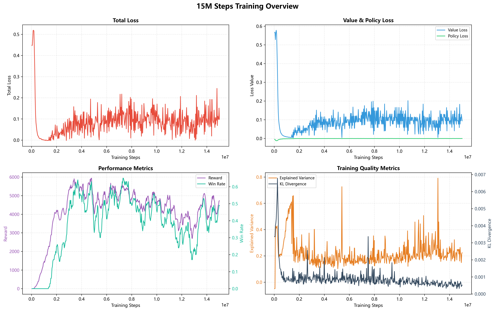
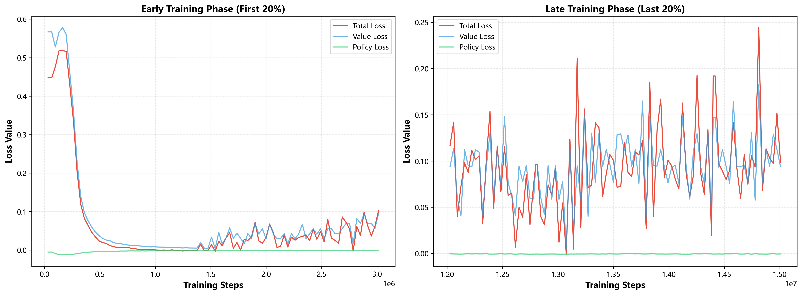

以 Pygame 建立 Flappy-like 遊戲環境，搭配 Stable-Baselines3 的 PPO 演算法訓練 AI 過關。這個網站是課堂第九週作業的作品展示頁，內容與開發規則都記錄在 repo 內的 AGENTS.md。
數字出自 repo 內的 README 與 CHANGELOG（2025-12-05 條目）。
| 項目 | 設定 |
|---|---|
| 演算法 | PPO（Stable-Baselines3，PyTorch） |
| 觀察空間 | [y, vy, x_obs, gap_top, gap_bottom, rel_top, rel_bottom]，正規化後的 7 維向量 |
| 動作空間 | Discrete(2)：0 不跳、1 跳躍 |
| 策略網路 | MLP，隱藏層 [256, 256]，ReLU |
| 並行環境 | 32 個訓練環境，額外 4 個評估環境 |
| 決策跳幀 | FrameSkip = 4 |
| 監控工具 | TensorBoard、Replay 回放、Auto-Resume 自動續訓 |
| 行為 | 獎勵 | 設計目的 |
|---|---|---|
| 通關 | +1000 | 追求最終勝利，而不只是存活 |
| 通過障礙 | +5 | 階段性成就，引導穿越縫隙 |
| 中心對齊 | 最多 +0.05 | 低權重輔助，減少碰撞風險 |
| 存活 | +0.01 / 步 | 核心驅動力 |
| 撞牆或出界 | -5 | 強烈懲罰死亡 |

outputs/plots/loss_overview_15M.png）
outputs/plots/loss_phases_comparison_15M.png）